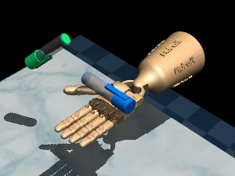
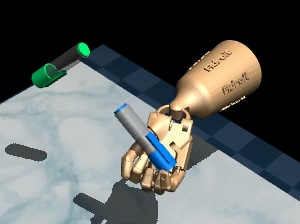
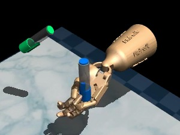
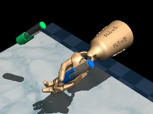

From invoking skills
to synthesizing them
A planner decides which skill to execute. A controller determines how to execute it. Frontier-model agents increasingly handle the first question, while assuming that the controllers behind those skills already exist.
Building controllers remains a demanding part of robotics. Rotating a pen in a dexterous hand requires precise coordination of fingers and wrist, changing contacts, and rapid corrections before the pen slips. Such skills are typically supplied through hand engineering, expert demonstrations, or large-scale reinforcement learning. Automating controller synthesis addresses the challenges beneath high-level planning.
Code as Primitives focuses on the difficulty of synthesizing individual skills rather than on broad coverage of task types. We use dexterous manipulation as a representative stress test and evaluate on DexVerse and Adroit.
Choose a policy class, then optimize within it
A basketball player first settles on a shooting form: stance, arm motion, release. Practice then fine-tunes the angle, force, and timing based on where each shot lands. When practice stops improving the shot, the player changes the form itself.
Our harness works the same way. The frontier model writes a policy class, a program that maps observations to low-level actions, with interpretable parameters such as gains, thresholds, and targets. It then tunes those parameters, either with a search algorithm it designs or with CEM. When tuning plateaus, the model revises the policy class itself. This produces compact, comparable evidence about specific parameter settings that guides the next round of parameter tuning.
Controller synthesis
Simulation-guided refinement
Write a controller, test it in simulation, and improve it using feedback. Policy-class revision and optional parameter search work together before standalone execution.
Which settings make it work? A literal PARAMS vector exposes gains, thresholds and targets. Candidate batches test them in the native simulator while the controller structure stays fixed.
PARAMS = [k₀, k₁, …, kₙ] # within declared bounds
evaluate_candidates(batch)
→ native rollouts, every one counted
run_compute(analysis) # NumPy / SciPy, no simulatorpolicy.pyWhat should the controller do? The model invents the features, feedback rules and branches from the task contract, and rewrites them when rollouts contradict its assumptions about the task.
# select a grasp by target alignment
best = max(LIB, key=lambda r:
sum(r[0][i] * t[i] for i in range(3)))
# blend on the observed pen axis
phase = max(0.0, min(1.0, (0.75 - v[33]) * 6)){·} Code as Primitives keeps control logic and parameters in one editable program, and lets evidence revise either.
search_0039), also available in Figure 3. The parameter-search interface illustrates the refinement tools.Rewriting the whole policy after every rollout leaves many possible explanations for success or failure. A changed threshold and a completely different strategy are both possible edits. Testing a batch within one policy class gives the agent a more comparable set of outcomes.
The harness supports two ways to search. CEM (the cross-entropy method) is a built-in optimizer run by the host. Agentic search lets the model propose candidate batches, inspect their rollouts, and run its own numerical analysis.
Core idea. The learned controller is a program, not a weight vector, so it is inspectable (a file you can read and diff), searchable (its constants are an explicit parameter space), and testable (the same frozen file runs from starts it has never seen).
Synthesizing a skill: reorienting a pen.
Contact-rich control makes both controller synthesis and refinement matter. In Adroit Pen, the controller sees the hand and pen state and must reorient the pen toward a target. An action that changes the pen’s orientation can also loosen the grasp or eject it, so a useful policy has to turn what it observes into a coordinated change across the fingers and wrist.
We follow one saved run, GPT-6 Astra with Agentic search on the ten-stage random-reset curriculum, through the learning loop. Figure 3 plays it alongside each stage of the loop.
observe
Neutral controls hold the pen horizontally. Thumb alone ejects it; wrist and thumb together support a raised grasp.
design
Select a grasp by target alignment. Blend controls using the observed pen axis.
Stage-one policy excerpt
# Select a library entry using the target orientation.
t = v[36:39]
best = max(LIB, key=lambda r:
sum(r[0][i] * t[i] for i in range(3)))
# Derive transitions from the observed pen axis.
phase = max(0.0, min(1.0, (0.75 - v[33]) * 6))
third = max(0.0, min(1.0, (0.5 - v[33]) * 5))Grasp library and action outputs omitted.
search
128 candidates expand the library. A later check of one parameter vector succeeds on 10/16 fresh starts.
revise
The first submission fails. Add reverse tilt and position compensation: 21/32 fresh starts succeed. The second frozen submission passes stage 1.
held-out
After refinement in stages 2–10, the frozen policy succeeds on 30/30 unseen starts. No model calls.




Pen reorientation illustrated in Figure 1.

PARAMS, evaluate it, and analyze the outcomes. Refine the batch or commit a vector. CEM supplies the optimizer; Agentic search lets the model design the search. Either can be skipped before submission.Read the policy and evaluation contract
The core interface is select_action(observation). The program returns native actuator commands or joint-position targets, depending on the environment. In the evaluated policy-only modes, it executes without a model-provider request at each action.
Training acceptance and held-out testing are separate. Training evaluations can feed adaptation. Held-out starts are reserved for frozen evaluation, and their outcomes are not returned to the learning agent.
Synthesized skills,
tested on unseen starts
Frozen programs, no model calls during evaluation.
DexVerse: standalone execution across 75 tasks
We evaluate on 75 DexVerse tasks across six categories, including four long-horizon tasks. On the 15 tasks with published imitation-learning baselines, Agentic search reaches 95.9% held-out success and CEM search reaches 96.7%, compared with 46.0% for the best imitation result on each task.1 On the remaining 60 tasks, Agentic and CEM search achieve 90.7% and 94.0%, respectively.
Per-task results and the remaining 60 tasks
| Task | Agentic search | CEM search | Best imitation learning |
|---|---|---|---|
| BimanualLiftCarton | 100 | 100 | 100 |
| BimanualLiftTray | 92 | 98 | 84 |
| GraspBleach | 98 | 100 | 32 |
| GraspCup | 100 | 100 | 50 |
| GraspKettle | 100 | 100 | 90 |
| GraspPan | 100 | 100 | 52 |
| RetrieveCup | 100 | 87 | 6 |
| OpenFaucet | 100 | 100 | 84 |
| OpenFlatFolder | 88 | 99 | 18 |
| OpenLaptop | 100 | 98 | 10 |
| SlideUtilityKnife | 93 | 100 | 0 |
| SqueezeScissors | 99 | 68 | 36 |
| FunctionalHammerStrike | 100 | 100 | 26 |
| FunctionalPourCan | 69 | 100 | 38 |
| FunctionalPourMug | 100 | 100 | 64 |
| Mean over 15 tasks | 95.9 | 96.7 | 46.0 |
| Category | Tasks | Agentic search | CEM search |
|---|---|---|---|
| Primitive | 7 | 94.0% | 95.6% |
| Functional | 2 | 100.0% | 100.0% |
| Articulation | 10 | 77.3% | 86.2% |
| Bimanual | 2 | 93.0% | 96.5% |
| Multi-goal | 35 | 99.0% | 98.9% |
| Long-horizon | 4 | 39.8% | 63.2% |
| Mean over 60 tasks | 60 | 90.7% | 94.0% |
The overall means weight each task equally; category sizes differ. Download the task lists and result data ↗
Earlier 75-task campaign: success and search cost
Our earlier Agentic search campaign with reference material (L3+papers) achieved 94.3% mean held-out success across 75 tasks, alongside 94.5% for CEM search (A0). Each accepted 73 of 75 tasks. These earlier Agentic results are a separate campaign from the paper’s Agentic series above; both sets are retained here.
| Category | Tasks | Earlier Agentic success | CEM success | Earlier Agentic search rollouts | CEM search rollouts |
|---|---|---|---|---|---|
| Primitive | 8 | 95.0% | 96.1% | 83.9 | 5.1 |
| Functional | 10 | 99.3% | 98.7% | 122.2 | 83.9 |
| Articulation | 14 | 87.6% | 87.6% | 422.6 | 178.7 |
| Bimanual | 4 | 98.0% | 97.8% | 83.0 | 0.0 |
| Multi-goal | 35 | 98.9% | 98.9% | 101.2 | 7.0 |
| Long-horizon | 4 | 60.8% | 63.2% | 1384.0 | 564.0 |
In both arms, mean parameter-search rollouts per task are below 150 in four of the six categories. These counts exclude controller-synthesis learning episodes, training evaluations, held-out tests and uncounted interrupted work; they describe parameter-search cost, not total simulator interaction. Unaccepted tasks remain in both the success and cost denominators. Earlier campaign data ↗
1 For each of the 15 tasks we take the highest success rate among π0.5, OpenVLA, DP3 and DP, then average those 15 values. The imitation policies train on 50 demonstrations per task with method-specific observations; our controllers use state and simulator feedback with no demonstrations. Source: DexVerse paper, Table 3 ↗ ↩
Adroit: 99.2% with random resets
GPT-6 Astra achieves 99.2% held-out success: 119 successful episodes out of 120. Hammer, Pen, and Relocate each succeed on 30/30 unseen starts (100%), while Door succeeds on 29/30 (96.7%).
With reasoning set to max, the model learns Door, Hammer, Pen, and Relocate without expert demonstrations. Each task uses one ten-stage curriculum with fresh native simulator resets throughout learning, Agentic parameter search, and training validation. The final controllers execute from state observations, with no model calls in the control loop.
- Learn across fresh starts. Every learning reset and independent search rollout receives a new host-sampled seed. Accepted policy code and eligible public evidence carry forward into the next stage, which has a fresh context and budgets.
- Increase the acceptance requirement. At stage k, one frozen policy must succeed on all k fresh validation episodes in a single submission. A failed submission may be revised and retried on new seeds while budgets remain. All four tasks passed all ten stages.
- Freeze, then test. The outgoing stage-ten controller runs on 30 additional seeds per task, reserved before adaptation and disjoint from every training seed. All 120 tests completed with zero model calls, zero execution errors, and no interrupted replacements.
Across the four training chains, parameter search used 17,140 rollouts. Total adaptation used 3,485,175 simulator steps across controller learning, search, and training validation; held-out testing added 24,000 steps. Full per-task costs, uncertainty estimates, seeds, and policy hashes are available in the source record.
How does this compare with imitation learning?
The 99.2% four-task average exceeds the reported averages of Geometry-aware Policy Imitation (GPI, 93.5%) and its Diffusion Policy baseline (90.8%), calculated from their four Adroit task scores. These are comparisons across different protocols: the published methods use demonstrations, and their evaluation settings differ from this curriculum. GPI, Table 2 ↗
Published imitation results and comparison scope
| Method | Door | Hammer | Pen | Relocate | Mean |
|---|---|---|---|---|---|
| GPI | 100 | 88 | 95 | 91 | 93.5 |
| DP, evaluated in GPI | 100 | 83 | 89 | 91 | 90.8 |
| Code as Primitives · Astra | 96.7 | 100 | 100 | 100 | 99.2 |
GPI’s Table 2 uses state observations and reports 5,000 demonstrations per Adroit task. Its accessible Adroit table and appendix do not specify the evaluation seed counts, episode counts, or horizons. The DP row is that paper’s reported baseline. Door reaches 100% in both published rows, so a higher four-task average does not imply higher success on every task.
DP3 provides additional visual imitation context: 62±4% on Door, 100±0% on Hammer, and 43±6% on Pen, averaging 68.3% over those three tasks. Our corresponding three-task result is 98.9% (89/90). Relocate is absent from that comparison. DP3 uses point clouds plus robot state, ten expert demonstrations per task, and three training seeds; for each seed it averages the five highest checkpoint success rates, each measured over 20 episodes. DP3 evaluation protocol ↗
These published scores provide numerical context. We did not rerun the imitation methods under this protocol, and the comparison does not establish an exhaustive record across prior work.
Exact Adroit acceptance rule and evaluation settings
These experiments use the native Gymnasium-Robotics Adroit tasks in simulation, with state vectors of 39–46 values and the full 24–30 actuator commands. Each episode allows 200 native actions at 100 Hz. At episode completion, success requires more than 25 successful frames for Door, Hammer, and Relocate, or more than 20 for Pen. Frames need not be consecutive, and an early successful frame does not end an episode.
Native per-step criteria are a door hinge angle of at least 1.35 radians; nail-to-goal distance below 0.01 m; pen position error below 0.075 m with an axis dot product above 0.95; and relocated object-to-target distance below 0.1 m. The only held-out failure was Door episode 22 (seed 489500068), which reached the 200-step limit without a successful frame.
Each training stage permits up to 300 model requests, 1,000 tool calls, 100 learning resets, 250 frozen submissions, 20,000 search rollouts, and 12 hours of stage time. Exhausting a stage budget ends the chain. Door used 16 validation submissions across ten stages; Hammer used 10, Pen 13, and Relocate 10. Their respective validation episode totals were 85, 55, 68, and 55.
There is one training chain per task, and independent held-out evaluation exists only for the final checkpoint. Training-stage acceptance is not a held-out learning curve. The result concerns native simulator reset distributions; it does not measure arbitrary physical disturbances or real-world transfer. Exact protocol, seed ledgers, and source hashes ↗
Earlier fixed-start curriculum: 48.3% versus 99.2%
An earlier GPT-6 Astra campaign learned ten fixed starts in sequence and required each accepted controller to solve the entire prefix introduced so far. Its final controllers succeeded on 58/120 held-out episodes (48.3%), compared with 119/120 (99.2%) for the fresh-reset curriculum. Both used ten stages and the same nominal stage limits.

This is a descriptive campaign comparison. Reset protocol, guidance, held-out seed sets, and realized interaction costs differ, so the observed gain does not isolate the causal effect of random resets. Both evaluations use simulated native reset states; neither provides replication across independent training chains.
The Claude Opus 5.5 Agentic-versus-CEM results below come from a separate campaign. They retain their own training protocol and outcomes; the 99.2% result above belongs specifically to GPT-6 Astra with the ten-stage random-reset curriculum.
Cost of interaction is where our two search methods differ. On DexVerse, the median task costs 81 rollouts with Agentic search and 5.5 with CEM search. In 54 of the 66 tasks, the first controllers designed under CEM search pass the training starts after resets alone, without a single search rollout; under Agentic search that happens in 7. Mean cost per task is 154.9 rollouts for Agentic search and 65.9 for CEM search.
The pattern is not uniform. On Adroit Hammer, CEM search spends 1,063 rollouts where Agentic search uses 93, and on DexVerse SqueezeScissors CEM search spends 1,756 to Agentic search’s 966 while reaching lower held-out success (68% vs. 99%). A fixed optimizer is cheap when the first design is close; on these two tasks, Agentic search reached an accepted controller with fewer rollouts.
Where refinement
remains difficult
Pen manipulation and long-horizon tasks expose the cost of coordinating contact, recovery, and multiple stages of behavior.
A benchmark pass can hide a brittle skill.
An earlier fixed-start Pen prototype switched between two control vectors using the pen’s observed axis. On its recorded training start, it accumulated 35 successful frames—enough to pass the aggregate benchmark criterion—then dropped the pen at step 69.
The newer random-reset policy behaves differently in the shown held-out replay: its last 121 frames are continuously successful, and it finishes with the pen retained and aligned. All 30 final held-out episodes end on successful frames.
Earlier fixed-start prototype
Final random-reset policy
The earlier prototype passed 2/9 additional seeds; the final random-reset policy passed 30/30 reserved seeds. These are different campaigns, protocols, and sample sizes—not a controlled ablation. The videos illustrate behavior beyond the binary score.
Composing skills over longer horizons
Code as Primitives synthesizes reusable low-level skills rather than optimizing long-horizon tasks directly. A long-horizon task is a composition of these skills. The goal is to reuse the atomic policies across longer tasks and keep improving the primitives themselves using feedback from execution.
MakeCoffee is one such longer task. It links four atomic skills: lifting the mug off its tree, pouring milk into it, placing it under the espresso machine, and turning the switch. None is specific to coffee; grasping, pouring, placing, and operating a switch all carry over to other tasks. Composed in sequence, they still hold up: in the replays below, policies from both Agentic search and CEM start from the same unseen state and complete the task.
Agentic search
CEM search
These replays are from the grasp-aware Agentic and CEM campaigns used in the Section 5 gallery. Both use the same held-out seed and camera, at 1× speed. The two controllers move through the subtasks at different paces; both satisfy the task’s strict stage sequence. CEM search reaches similar held-out success after about eleven times as many rollouts.
Long-horizon tasks are low-level skills pieced together, so we focus on the skills.
Visualization of
all 79 tasks
Each frozen controller on one unseen start, with its held-out success and search cost under Agentic and CEM search.
BibTeX
@misc{codeasprimitives2026,
author = {Chen, Zhiqi and Fang, Djengo Cyun-Jyun and Zeng, Guanning and
Li, Xiuyu and Feng, Haiwen and Zanette, Andrea},
title = {{Code as Primitives: Harnessing Frontier Models to Synthesize Low-Level Robotic Skills}},
year = {2026},
url = {https://zhiqichen05.github.io/Code-as-Primitives/},
note = {Extended abstract and project website}
}